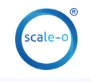
www.scale-o.com
Month 3 · Content Engine · India Tank Homes
What we delivered for Scale-O in October: fresh keyword research, 12 blog topics mapped to real India demand, an E-E-A-T writing framework, and 12 long-form articles with complete on-page SEO. All 12 are live on scale-o.com.
Overview
September scaled the content engine. October kept the same quality bar and opened new clusters: winter geyser and solar, bathing compare, hardness levels, side effects, softener lifespan, dandruff, and three new city problem blogs (Hyderabad, Jaipur, Chennai). Client rejected two draft topics mid-month; both were replaced before publish.
Context
October did not rewrite September work. It added winter, bathing, buyer-objection and new-city clusters on top of locked Aug/Sep URLs.
| Metric | Sep | Oct | Running* |
|---|---|---|---|
| New blog primary keywords locked | 12 | 12 | 31+ |
| Long-form 3,000+ word posts | 8+ | 12 | 20+ |
| City hard-water problem blogs | 3 | 3 | 6 |
Area 01
Full list of the 12 posts shipped in October: publish date, H1 title, primary keyword and live handle. One primary per URL.
| # | Date | Blog title (H1) | Primary keyword | |
|---|---|---|---|---|
| O1 | 8 Oct | How to Clean a Shower Head Clogged by Hard Water | how to clean shower head | Live |
| O2 | 9 Oct | Whole House Water Softener for Independent Houses in India | whole house water softener | Live |
| O3 | 12 Oct | Geyser Descaling: How to Remove Scale Before Winter | geyser descaling | Live |
| O4 | 13 Oct | Water Hardness Levels: What Your PPM or TDS Number Means | water hardness level | Live |
| O5 | 14 Oct | Water Softener for Solar Water Heaters on Hard Water | water softener for solar water heater | Live |
| O6 | 15 Oct | Hard Water vs Soft Water for Bathing: Hair, Skin and Daily Use | hard water vs soft water for bathing | Live |
| O7 | 16 Oct | Water Softener Side Effects: What Is True and What Is Myth | water softener side effects | Live |
| O8 | 19 Oct | How Long Does a Water Softener Last in Indian Homes? | how long does a water softener last | Live |
| O9 | 20 Oct | Hard Water Dandruff: Why Your Scalp Itches More in Winter | hard water dandruff | Live |
| O10 | 21 Oct | Hyderabad Hard Water: Borewell Homes and Villa Communities | Hyderabad hard water | Live |
| O11 | 22 Oct | Jaipur Hard Water: Rajasthan Tank Homes and Borewell Supply | Jaipur hard water | Live |
| O12 | 23–26 Oct | Chennai Hard Water: Borewell, Salinity and Scale in Tank Homes | Chennai hard water | Live |
Shower clean, geyser descaling, solar heater, dandruff for Diwali-to-winter searches.
O1 · O3 · O5 · O9Whole house, hardness levels, bathing, side effects, lifespan.
O2 · O4 · O6 · O7 · O8Hyderabad, Jaipur, Chennai problem blogs after Delhi / Ahmedabad / Pune.
O10 · O11 · O12Area 01
Exact Shopify handles used. Verified present on scale-o.com/blogs/articles.atom.
| # | Handle | Full path |
|---|---|---|
| O1 | how-to-clean-shower-head | /blogs/articles/how-to-clean-shower-head |
| O2 | whole-house-water-softener-india | /blogs/articles/whole-house-water-softener-india |
| O3 | geyser-descaling | /blogs/articles/geyser-descaling |
| O4 | water-hardness-levels | /blogs/articles/water-hardness-levels |
| O5 | water-softener-for-solar-water-heater | /blogs/articles/water-softener-for-solar-water-heater |
| O6 | hard-water-vs-soft-water-for-bathing | /blogs/articles/hard-water-vs-soft-water-for-bathing |
| O7 | water-softener-side-effects | /blogs/articles/water-softener-side-effects |
| O8 | how-long-does-a-water-softener-last | /blogs/articles/how-long-does-a-water-softener-last |
| O9 | hard-water-dandruff | /blogs/articles/hard-water-dandruff |
| O10 | hyderabad-hard-water | /blogs/articles/hyderabad-hard-water |
| O11 | jaipur-hard-water | /blogs/articles/jaipur-hard-water |
| O12 | chennai-hard-water | /blogs/articles/chennai-hard-water |
diwali-cleaning-checklist, polyphosphate-water-softener-vs-scale-o. Final O4 / O6 handles above are the live ones.
Area 01
Primary keywords only. Secondaries live in H2s and FAQs (next pages). Volume bands are India estimates from autocomplete depth, not invented Keyword Planner numbers.
| # | Primary keyword | Intent | Band | Biz value |
|---|---|---|---|---|
| Seasonal / how-to | ||||
| O1 | how to clean shower head | HowTo | Med | High |
| O3 | geyser descaling | HowTo | Low–Med | High |
| Commercial | ||||
| O2 | whole house water softener | Commercial | Low–Med | Very high |
| O5 | water softener for solar water heater | Commercial | Low | Very high |
| Buyer education / objection | ||||
| O4 | water hardness level | Guide | Med | High |
| O6 | hard water vs soft water for bathing | Compare | Med | High |
| O7 | water softener side effects | Objection | Med | High |
| O8 | how long does a water softener last | Objection | Low–Med | High |
| O9 | hard water dandruff | Problem | Low–Med | Med–High |
| City problem blogs | ||||
| O10 | Hyderabad hard water | Local | Low–Med | High |
| O11 | Jaipur hard water | Local | Low–Med | High |
| O12 | Chennai hard water | Local | Low–Med | High |
Area 01
Each secondary appears in at least one H2/H3 or FAQ plus body copy. Primaries stay unique across the site.
| # | Primary | Secondaries used |
|---|---|---|
| O1 | how to clean shower head | how to clean shower head holes; shower head clogged with mineral deposits; how to clean shower heads from hard water |
| O2 | whole house water softener | whole house water softener India; water softener for independent house; villa; bungalow; house tank; Sintex tank |
| O3 | geyser descaling | how to descale geyser at home; geyser scale remover; geyser descaling cost; anti scale geyser |
| O4 | water hardness level | hard water ppm range; water hardness levels chart; borewell water hardness level; TDS level for hard water; for bathing |
| O5 | water softener for solar water heater | solar water heater for hard water India; solar water heater descaling; best solar water heater for hard water |
| O6 | hard water vs soft water for bathing | for hair; for skin; which is better; soft water benefits for skin and hair |
| O7 | water softener side effects | water softener disadvantages; side effects long term; disadvantages of soft water; health issues |
| O8 | how long does a water softener last | how many years; how long do salt free last; maintenance cost India; maintenance |
| O9 | hard water dandruff | itchy scalp; dry scalp; hard water se dandruff hota hai (FAQ); dandruff shampoo (FAQ) |
| O10 | Hyderabad hard water | Hyderabad hard water reddit; does Hyderabad have; Hyderabad borewell water |
| O11 | Jaipur hard water | does Jaipur have; Jaipur water hard or soft; Rajasthan hard water |
| O12 | Chennai hard water | Chennai hard water reddit; does Chennai have; Chennai borewell water |
Area 02
Primary at the front of every SEO title. Titles 45–60 characters where possible; metas 145–160. Sourced from October paste packs.
| # | SEO title | Title | Meta | |
|---|---|---|---|---|
| O1 | How to Clean Shower Head Holes Blocked by Hard Water | 52 | 159 | Done |
| O2 | Whole House Water Softener for Indian Homes | Scale-O | 53 | 156 | Done |
| O3 | Geyser Descaling at Home: Steps, Cost and Prevention | 52 | 159 | Done |
| O4 | Water Hardness Levels Chart: PPM and TDS Explained | 50 | 156 | Done |
| O5 | Water Softener for Solar Water Heater | India Guide | 51 | 157 | Done |
| O6 | Hard Water vs Soft Water for Bathing: Hair and Skin | 51 | 153 | Done |
| O7 | Water Softener Side Effects: Facts for Indian Homes | 51 | 159 | Done |
| O8 | How Long Does a Water Softener Last? India Guide | 48 | 160 | Done |
| O9 | Hard Water Dandruff and Itchy Scalp: What Helps | 47 | 156 | Done |
| O10 | Hyderabad Hard Water for Tank Homes | Scale-O Guide | 51 | 157 | Done |
| O11 | Jaipur Hard Water Guide for Tank Homes | Scale-O | 48 | 156 | Done |
| O12 | Chennai Hard Water in Borewell Homes | Scale-O Guide | 51 | 156 | Done |
Example meta (O6)
Area 02
| Placement | Primary | Secondaries | |
|---|---|---|---|
| SEO title | Exact at the front | Optional | 12/12 |
| Meta description | Exact at the front | 1–2 terms | 12/12 |
| H1 | Exact or very close | No | 12/12 |
| First 100 words | Once in Short answer | Yes | 12/12 |
| H2s | ≥2 incl. FAQ H2 | H2/H3 | 12/12 |
| Body | 6–8 exact mentions | Natural | 12/12 |
| FAQ H3 | One question | Yes | 12/12 |
| Excerpt + image ALT | Exact | Light | 12/12 |
No clash with Aug / Sep owners
| Already owned | Owner | October rule |
|---|---|---|
| how to remove hard water stains | Sep S1 | O1 owns shower head clean only |
| hard water damage to geyser | Aug | O3 owns descaling how-to / cost |
| hard water vs soft for bathing as medical | — | O6 owns bathing compare; no medical claims |
| best water softener in Hyd / Jaipur / Chennai | City pages (future) | Blogs own “[city] hard water” only |
| does salt free water softener work | Live | Not retargeted in Oct |
Area 03
| # | Blog | Words | H2 | FAQs | PDP | Blog links |
|---|---|---|---|---|---|---|
| O1 | Clean shower head | 3,753 | 18 | 12 | 9 | 13 |
| O2 | Whole house softener | 3,516 | 18 | 9 | 9 | 12 |
| O3 | Geyser descaling | 3,385 | 19 | 8 | 9 | 11 |
| O4 | Water hardness levels | 3,161 | 17 | 10 | 9 | 18 |
| O5 | Solar water heater | 3,224 | 15 | 12 | 9 | 13 |
| O6 | Hard vs soft bathing | 3,210 | 16 | 14 | 9 | 16 |
| O7 | Side effects | 3,090 | 14 | 8 | 9 | 22 |
| O8 | How long softener lasts | 3,044 | 13 | 8 | 9 | 16 |
| O9 | Hard water dandruff | 3,015 | 14 | 8 | 9 | 16 |
| O10 | Hyderabad hard water | 3,007 | 14 | 8 | 9 | 25 |
| O11 | Jaipur hard water | 3,007 | 13 | 8 | 9 | 24 |
| O12 | Chennai hard water | 3,006 | 14 | 8 | 9 | 25 |
Area 03
Indian tank homes: Diwali showers, winter geysers, terrace solar, Hyd/Jaipur/Chennai borewell notes, bathing honesty.
Hardness bands, descaling steps, salt vs salt-free limits, scalp film vs medical dandruff, salinity vs hardness in Chennai.
USGS hardness links, live Aug/Sep siblings, PDPs, plans, trial, city page handoffs where they exist.
No soft-water feel promises for Scale-O; no medical cures; no overnight crust dissolve; bleach+acid and stone safety called out.
Area 04
Same GEO layer as September, applied to all 12 October posts.
| GEO element | What we did | |
|---|---|---|
| Answer-first opening | Bold Short answer on every post | 12/12 |
| Question-style FAQs | 100+ FAQ H3s in natural ask language | 12/12 |
| HTML comparison tables | Before/after and type tables AI can parse | 12/12 |
| Consistent brand facts | Salt-free chelation, 6-month life, Mini/Semi/Centi, no soft strip claim | 12/12 |
| Cited sources | USGS hardness where relevant; honest city mineral notes | Done |
| BlogPosting + FAQ schema | Theme templates from earlier months | 12/12 |
Stating limits (does not soften like salt, not a drinking filter) makes pages safer for AI to cite than overclaiming competitors.
O4 and O6 topic swaps applied before paste packs shipped; rejected Diwali checklist and polyphosphate never published.
Proof
Search query matches the O8 short answer. Google’s AI Overview names Scale-O for compact / overhead tank inserts (6-month cycle) and shows our India lifespan guide as a source card. · how-long-does-a-water-softener-last
| What Google shows | Scale-O signal |
|---|---|
| Query / answer line | “How long a water softener lasts depends on type” |
| Named in AI bullets | Compact / overhead tank inserts · Scale-O · 6-month replacement |
| Also cited | Magnetic / electronic conditioners (Scale-O source chip) |
| Source card | “How Long Does a Water Softener Last? India Guide · Scale-O” |
| Published | O8 · 19 Oct 2026 · already in AI Overview |
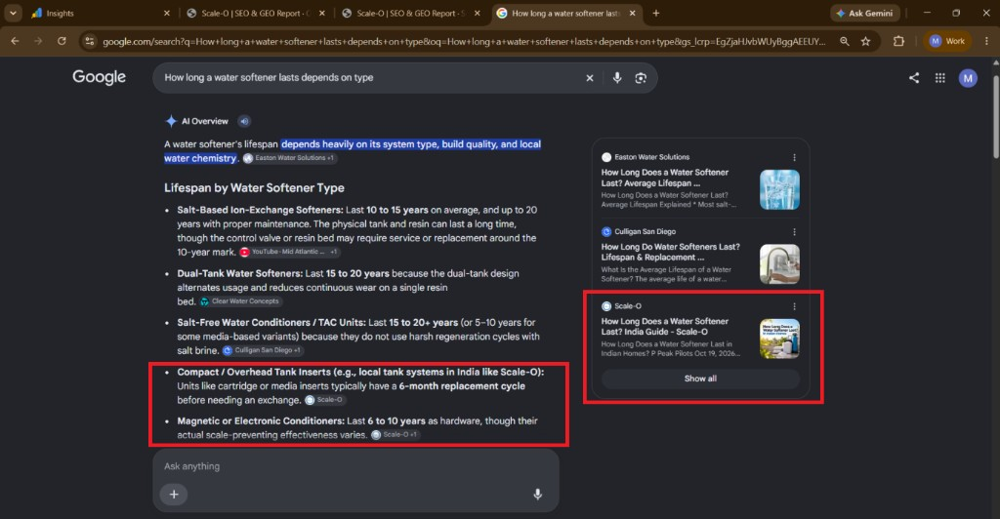
Proof
Screenshots below are from the live Search Console style Trending up report for scale-o.com (Clicks). October articles are already picking up clicks from a previous baseline of zero, and older Aug/Sep guides plus city pages keep climbing. In practice: the longer a strong blog stays live and indexed, the easier it becomes for Google to trust it and push it toward the top of results.
| Page (examples from proof) | Built | Clicks change |
|---|---|---|
| water-hardness-levels | October | +87 (was 0) |
| geyser-descaling | October | +40 (was 0) |
| whole-house-water-softener-india | October | +26 (was 0) |
| how-to-clean-shower-head | October | +18 (was 0) |
| hard-water-vs-soft-water-for-bathing | October | +7 (was 0) |
| magnetic-water-softener | September | +11 (was 0) |
| how-to-install-water-softener-overhead-tank | September | +4 (↑100%) |
| pune-hard-water | September | +5 (was 0) |
| Mini PDP (500L) | Product | +26 (↑137%) |
| Ahmedabad city page | City page | +11 (↑69%) |
Proof
Screenshot 1 of 3 · Trending up · Clicks. Top movers include water hardness levels (+87), geyser descaling (+40), whole house (+26), Mini PDP (+26), shower head (+18).
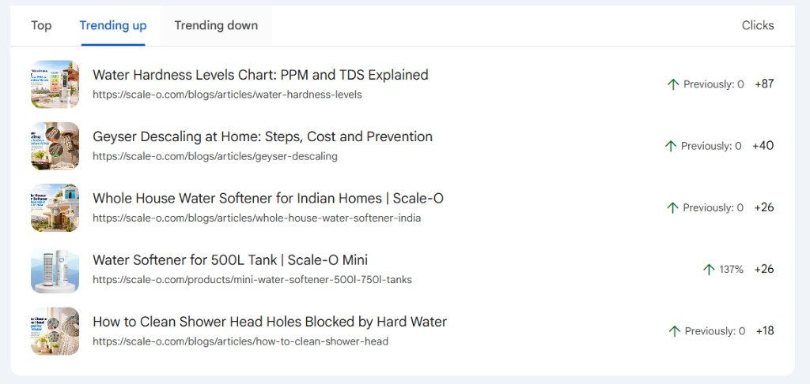
Proof
Screenshot 2 of 3. Continues the trending list: magnetic softener, Ahmedabad page, reviews, bathing compare, Bangalore page, plus the October leaders above.
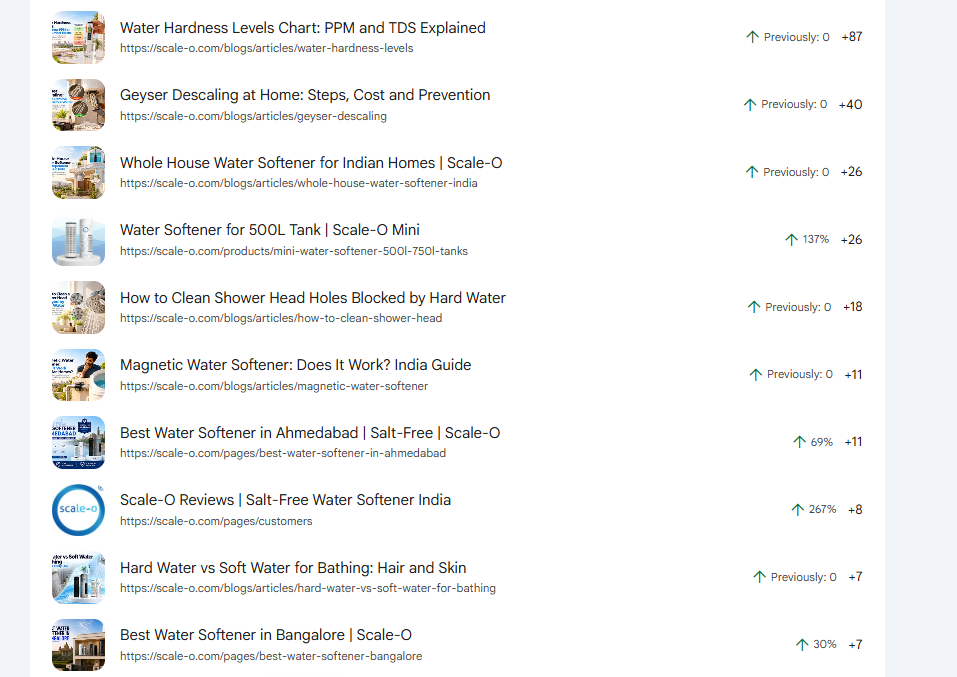
Proof
Screenshot 3 of 3. Shows more growth for solar heater, Pune hard water, Centi PDP, scaling/TDS evergreen, dandruff, install guide, Delhi page, laundry, chelation, and softener lifespan.
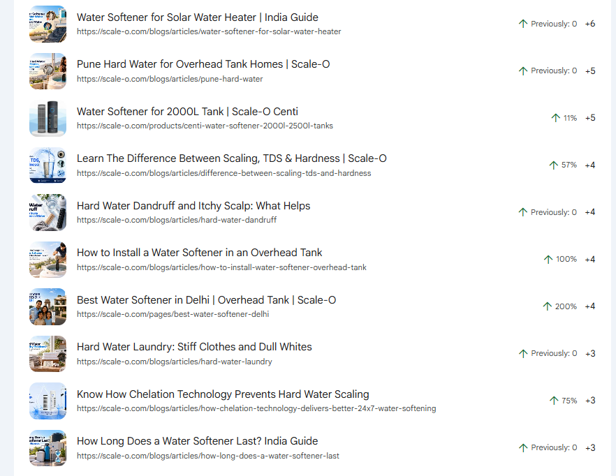
Case study
Live URL: scale-o.com/blogs/articles/water-hardness-levels · Primary: water hardness level · Published mid-October (O4). Google Search Console compare: Last 28 days vs previous 28 days.
| Metric | Last 28 days | Previous 28 days | Change |
|---|---|---|---|
| Total clicks | 87 | 0 | +87 |
| Total impressions | 10,300 | 0 | +10.3k |
| Average CTR | 0.8% | 0% | +0.8 pts |
| Average position | 5.2 | — | Page-one band |
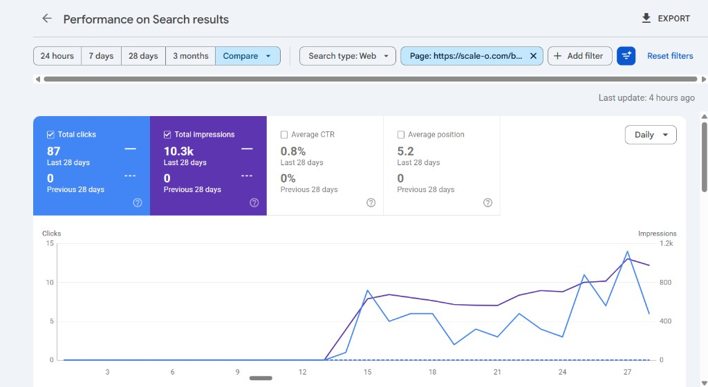
Case study
Top queries driving the hardness-levels article. Previous period was 0 clicks / 0 impressions on each row — all growth is new.
| # | Search query | Clicks | Prev. | Impr. | Prev. |
|---|---|---|---|---|---|
| 1 | drinking water hardness limit in ppm | 3 | 0 | 30 | 0 |
| 2 | drinking water hardness limit | 1 | 0 | 119 | 0 |
| 3 | hardness of drinking water standard in ppm | 1 | 0 | 65 | 0 |
| 4 | hard water tds level | 1 | 0 | 53 | 0 |
| 5 | drinking water hardness range | 1 | 0 | 27 | 0 |
| 6 | ppm chart for water | 1 | 0 | 14 | 0 |
| 7 | 500 ppm water hardness | 1 | 0 | 8 | 0 |
| 8 | normal water hardness level | 1 | 0 | 8 | 0 |
| 9 | 128 ppm water | 1 | 0 | 4 | 0 |
| 10 | water hardness 500 ppm | 1 | 0 | 4 | 0 |
drinking water hardness limit — 119 impressions (from 0). Strong visibility for a drinking/ppm related query on the O4 guide.
drinking water hardness limit in ppm — 3 clicks (from 0). Exact ppm / limit language matches the chart angle of the post.
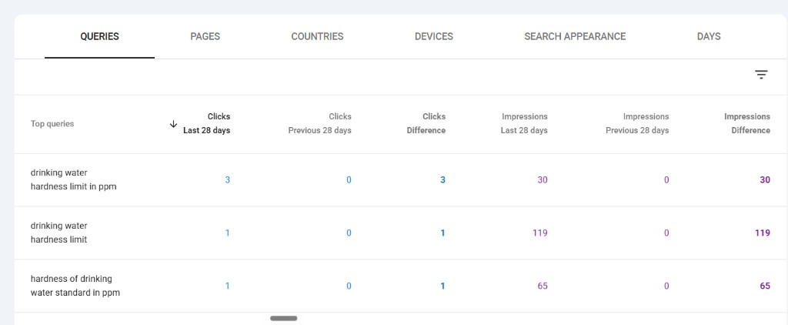
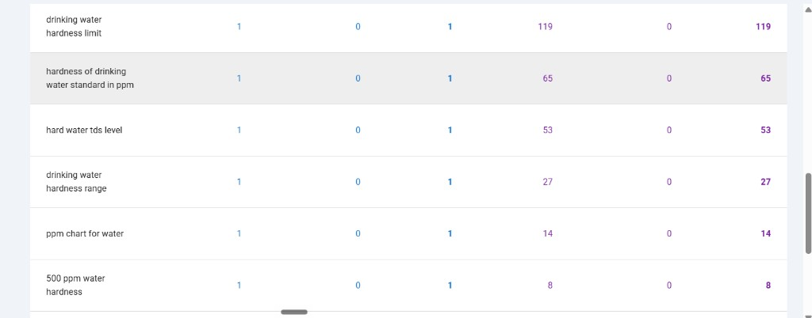
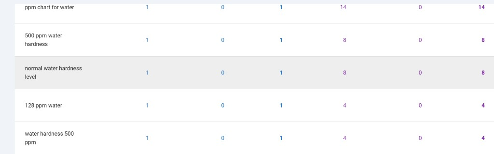
Case study
scale-o.com/blogs/articles/geyser-descaling · Primary: geyser descaling · O3 · Last 28 days vs previous (GSC).
| Metric | Last 28 days | Previous | Change |
|---|---|---|---|
| Clicks | 40 | 0 | +40 |
| Impressions | 1,870 | 0 | +1.87k |
| Avg. CTR | 2.1% | 0% | +2.1 pts |
| Avg. position | 5.2 | — | Page-one band |
Top queries (small table)
| Query | Clicks | Impr. |
|---|---|---|
| geyser descaling | 2 | 59 |
| descaling geyser | 2 | 25 |
| descaling of geyser | 1 | 29 |
| geyser scale remover | 1 | 20 |
| geyser descaling kit | 1 | 7 |
| geyser deep cleaning | 1 | 2 |
| how to descale geyser | 0 | 22 |
| गीजर की सफाई कैसे करें | 0 | 24 |
| geyser ki safai kaise karen | 0 | 21 |
| geyser descaling powder | 0 | 13 |
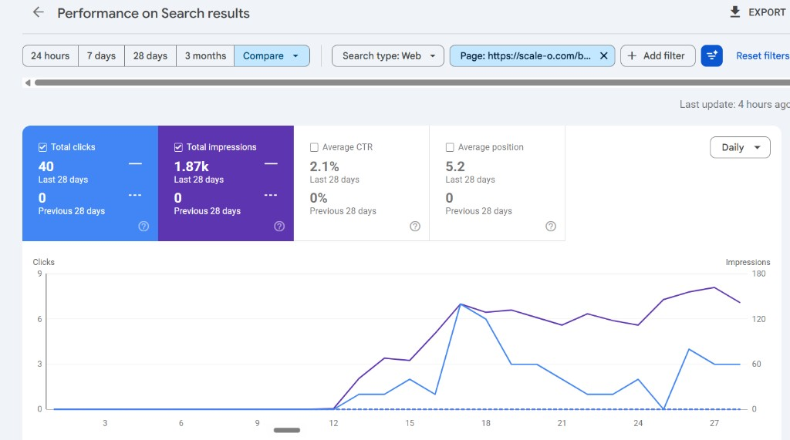
Case study
scale-o.com/blogs/articles/whole-house-water-softener-india · Primary: whole house water softener india · O2 · Last 28 days vs previous (GSC).
| Metric | Last 28 days | Previous | Change |
|---|---|---|---|
| Clicks | 26 | 0 | +26 |
| Impressions | 1,320 | 0 | +1.32k |
| Avg. CTR | 2% | 0% | +2 pts |
| Avg. position | 5.5 | — | Page-one band |
Top queries (small table)
| Query | Clicks | Impr. |
|---|---|---|
| water softener for bungalow | 0 | 11 |
| water softener for sintex tank | 0 | 11 |
| how to choose an affordable whole house water softener… | 0 | 10 |
| whole house water softener india | 0 | 7 |
| whole house water softener for bathroom | 0 | 7 |
| water softener for villa | 0 | 6 |
| water softener for sintex | 0 | 5 |
| whole house water softener | 0 | 5 |
| independent house | 0 | 4 |
| overhead tank | 0 | 3 |
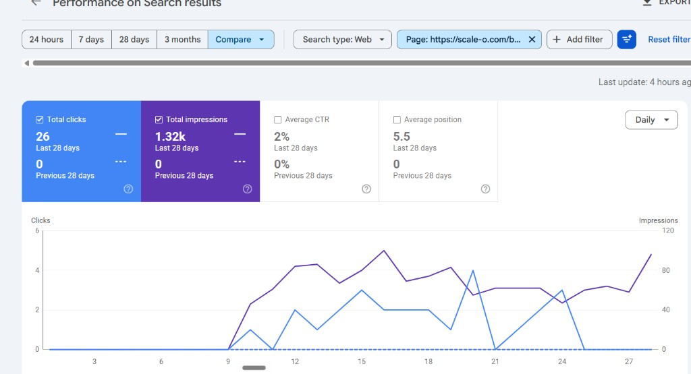
Proof
Checked against scale-o.com/blogs/articles.atom and October paste packs in the repo.
| Check | Result | |
|---|---|---|
| Blog URL loads | All 12 October handles present in the live atom feed | 12/12 |
| Unique primary keywords | No overlap with Aug/Sep locked primaries | 12/12 |
| 3,000+ word bodies | All paste-pack bodies clear 3,000 words | 12/12 |
| Commercial block | Mini / Semi / Centi + plans + trial on every post | 12/12 |
| E-E-A-T checklist | Experience / Expertise / Authority / Trust block on every post | 12/12 |
| Rejected topics unpublished | Diwali checklist + polyphosphate URLs not live | Pass |
| Google AI Overview cite | O8 lifespan guide named in AI answer + source card (page 13) | Live |
| Ranking proof screenshots | Trending-up clicks attached (pages 14–17) | Done |
| Top blog case studies | hardness (87) + geyser (40) + whole-house (26) | Done |
Summary
Verified against the October keyword plan, topic list, 12 paste packs, the live atom feed, and ranking screenshots.
Thank you
Twelve researched keywords, twelve live long-form guides, Google AI Overview already citing Scale-O by name, and hardness-levels, geyser-descaling, and whole-house softener India in the page-one band. Ready for November.
We can walk through any keyword, title, live URL or ranking screenshot on a short call.